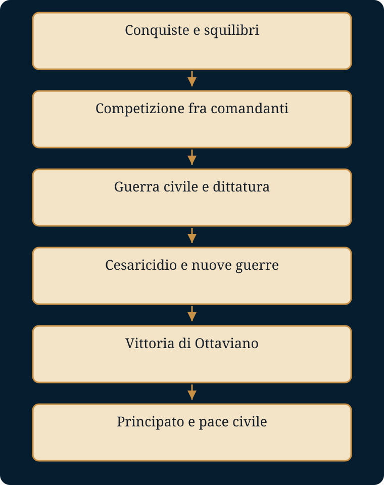

Come poté nascere una monarchia senza che Roma accettasse un re?
Luoghi e tempi. Roma e l’Italia; Gallia; Grecia (Farsalo, Filippi, Azio); Egitto. Il Mediterraneo conquistato mette alla prova le istituzioni della città.
- Mondo precedente
- Una Repubblica di magistrature annuali, Senato e assemblee governa ormai un impero.
- Fratture
- La violenza politica e le guerre civili superano i limiti della competizione aristocratica.
- Attori e conflitti
- Senatori, generali, veterani, plebe urbana e provinciali cercano autonomia, terre, sicurezza e riconoscimento.
- Processo e cause
- Comandi prolungati e ricompense rafforzano il rapporto fra soldati e comandanti; la vittoria militare richiede poi legittimazione.
- Conseguenze
- Cesare espone l’eccezione; Augusto la distribuisce tra poteri diversi e la rende duratura.
- Risposta alla domanda
- Il Principato afferma la supremazia di uno solo attraverso forme repubblicane, pace e consenso, senza il titolo di re.
La dispensa integrale
Testo originale di gbprof e Libera, comprese le attività e le tabelle. Le sezioni introduttiva e conclusiva di questa pagina sono strumenti aggiunti. Scarica il Word originale.
CESARE E AUGUSTO
Il tramonto della Repubblica e la nascita del Principato
DISPENSA DIDATTICA
Racconto storico integrale, strumenti di studio e confronto finale
Un lavoro di gbprof e Libera
Come usare questa dispensa
STRUTTURA |
Il racconto storico originale è riportato integralmente e senza modifiche. Dopo ciascun capitolo sono aggiunti una sintesi, i saperi irrinunciabili, il vocabolario essenziale, uno schema logico e domande aperte di comprensione. La sezione finale confronta le modalità con cui Cesare e Augusto conquistarono e organizzarono il potere. |
Avvertenza al lettore
Questo testo racconta una trasformazione politica reale servendosi di una forma narrativa. Non inventa dialoghi, pensieri segreti o scene private che le fonti non permettono di ricostruire. Quando le testimonianze antiche divergono, il racconto evita di scegliere una certezza inesistente. L’obiettivo è far vedere gli uomini dentro gli eventi senza trasformare la storia in romanzo.
Cesare e Augusto non vengono presentati come eroi predestinati né come semplici tiranni. Furono due aristocratici romani che agirono in una Repubblica già attraversata da conflitti profondi. Il primo rese evidente la crisi dell’ordine antico; il secondo costruì un sistema nuovo conservando molti nomi e molte forme della tradizione repubblicana.
Il racconto comincia prima di loro, perché nessun uomo, per quanto potente, crea da solo il tempo in cui vive.
1. Una Repubblica diventata troppo vasta
Roma, II-I secolo a.C.
Nel corso di poche generazioni Roma aveva conquistato il Mediterraneo. Aveva sconfitto Cartagine, imposto il proprio dominio sulla Grecia, trasformato regni e territori in province, portato in Italia ricchezze, schiavi, opere d’arte e nuove ambizioni. La città che un tempo aveva governato il Lazio era diventata il centro di un impero, ma continuava a essere amministrata attraverso istituzioni nate per una comunità molto più piccola.
Ogni anno i cittadini eleggevano magistrati con incarichi brevi. Il Senato, formato dall’aristocrazia politica, guidava la continuità dello Stato. Le assemblee votavano leggi e sceglievano i magistrati. In teoria nessun uomo avrebbe dovuto occupare stabilmente il vertice: le cariche erano temporanee, collegiali, sottoposte a limiti e controlli. Questa struttura aveva impedito per secoli la nascita di un re. Ora, però, la conquista aveva moltiplicato le occasioni di comando e di arricchimento.
Governare una provincia significava amministrare tasse, giustizia, eserciti e città lontane. Guidare una guerra vittoriosa significava tornare a Roma con bottino, gloria e soldati riconoscenti. I migliori comandi diventavano strumenti di competizione politica. Gli aristocratici non combattevano soltanto per servire la Repubblica: combattevano anche per superarsi l’un l’altro.
Nel frattempo la società italiana era cambiata. Molti contadini avevano trascorso lunghi anni sotto le armi; alcuni avevano perso la propria terra, altri erano riusciti a conservarla. Le grandi proprietà si erano estese in diverse regioni, alimentate dal lavoro servile. Roma attirava masse di cittadini poveri, clienti, artigiani, liberti e uomini in cerca di occasioni. Le province sopportavano tributi e abusi, mentre gli alleati italici chiedevano una cittadinanza piena che Roma concedeva con riluttanza.
La tensione esplose più volte. Tiberio e Gaio Gracco tentarono di intervenire sulla distribuzione delle terre e sul rapporto tra popolo e Senato. Entrambi morirono nella violenza politica. Da quel momento l’idea che un avversario potesse essere eliminato fisicamente smise di apparire impensabile.
Poi vennero Mario e Silla. Mario costruì la propria grandezza attraverso successi militari e ripetuti consolati. Silla marciò su Roma con le legioni, occupò la città e instaurò una dittatura. Le proscrizioni dichiararono alcuni cittadini nemici pubblici: i loro beni potevano essere confiscati e la loro uccisione ricompensata. La Repubblica sopravvisse formalmente, ma aveva imparato una lezione terribile: un generale vittorioso poteva usare l’esercito contro altri Romani.
Non fu una singola riforma militare a creare improvvisamente eserciti personali. Il processo fu graduale. I soldati restavano cittadini romani e combattevano sotto le insegne dello Stato; tuttavia, dopo campagne lunghe, il loro futuro dipendeva spesso dalle terre e dai premi che il comandante riusciva a ottenere. Quando il generale appariva più capace dello Stato di garantire quelle ricompense, la fedeltà personale acquistava un peso nuovo.
All’inizio del I secolo a.C. la Repubblica possedeva ancora istituzioni forti, magistrati autorevoli e una classe dirigente esperta. Ma le regole funzionavano sempre peggio perché gli stessi uomini che avrebbero dovuto rispettarle avevano imparato a usarle come armi nella lotta politica. Fu in questo mondo che crebbero Pompeo, Crasso e Cesare.
Strumenti per lo studio
SINTESI DEL CAPITOLO |
L'espansione mediterranea rese inadeguati gli equilibri di una Repubblica nata per governare una città. Ricchezze, province, eserciti e competizione aristocratica alimentarono disuguaglianze e violenza politica. |
Saperi irrinunciabili
• Roma governava un impero con istituzioni pensate per una comunità più piccola.
• Le magistrature repubblicane erano temporanee, collegiali e sottoposte a controlli.
• La conquista rafforzò generali, clientele e competizione per i comandi.
• Dai Gracchi a Silla, la violenza divenne uno strumento ordinario della politica.
• Il legame tra soldati e comandante si rafforzò gradualmente attraverso premi e terre.
Vocabolario essenziale
Termine | Significato |
Repubblica | Sistema politico senza re, fondato su magistrature, Senato e assemblee. |
Magistratura | Carica pubblica temporanea esercitata da uno o più cittadini. |
Provincia | Territorio soggetto al dominio romano e amministrato da un governatore. |
Proscrizione | Lista pubblica di nemici dello Stato, privati di beni e protezione. |
Clientela | Rete di rapporti personali di protezione, sostegno e dipendenza. |
Schema logico
Conquiste mediterranee → Crescita di ricchezze, province ed eserciti → Crisi sociale e competizione aristocratica → Violenza politica e comandi personali → Indebolimento delle regole repubblicane
Domande aperte di comprensione
1. Perché le istituzioni repubblicane divennero meno adatte a governare Roma?
________________________________________________________________________________
________________________________________________________________________________
2. In che modo le conquiste trasformarono la competizione politica?
________________________________________________________________________________
________________________________________________________________________________
3. Perché la fedeltà dei soldati ai comandanti acquistò un peso crescente?
________________________________________________________________________________
________________________________________________________________________________
4. Quale precedente pericoloso crearono Mario e Silla?
________________________________________________________________________________
________________________________________________________________________________
2. Il giovane Cesare
Dalla sopravvivenza sotto Silla al consolato
Gaio Giulio Cesare nacque nel 100 a.C. in una famiglia patrizia antica, legata alla tradizione della gens Iulia, ma non collocata allora al centro assoluto del potere. Essere patrizio gli dava prestigio; non gli garantiva però il dominio politico. A Roma la nobiltà viveva di memoria familiare, alleanze, matrimonio, ricchezza e successo personale. Ogni generazione doveva dimostrare di essere all’altezza dei propri antenati.
Da giovane Cesare si trovò vicino agli ambienti ostili a Silla. Aveva sposato Cornelia, figlia di Cinna, uno dei capi della parte mariana. Quando Silla gli ordinò di ripudiarla, Cesare rifiutò. La tradizione racconta che dovette nascondersi e che alcuni influenti amici ottennero la sua salvezza. Le parole attribuite a Silla, secondo cui in quel giovane si nascondevano molti Marii, appartengono alla costruzione biografica posteriore; descrivono però bene il modo in cui i Romani interpretarono in seguito quella giovinezza.
Cesare servì in Asia, si distinse durante l’assedio di Mitilene e ricevette la corona civica, un’onorificenza concessa a chi aveva salvato la vita di un cittadino romano. Dopo la morte di Silla tornò a Roma e iniziò una carriera pubblica fondata sull’oratoria e sulla ricerca del consenso. Accusò alcuni governatori di cattiva amministrazione, studiò retorica e seppe rendersi visibile in una città dove la visibilità era una forma di potere.
La sua ascesa costò enormemente. Giochi pubblici, spettacoli, edifici, distribuzioni e campagne elettorali richiedevano denaro. Cesare si indebitò con uomini ricchissimi, soprattutto con Marco Licinio Crasso. Il debito non era soltanto debolezza: poteva diventare una scommessa sul futuro. Chi prestava denaro a un politico ambizioso investiva nella sua carriera; chi riceveva il prestito era costretto a vincere.
Nel 63 a.C. Cesare fu eletto pontefice massimo, una delle più prestigiose cariche religiose di Roma. La vittoria dimostrò la sua capacità di mobilitare voti e relazioni. Nello stesso anno la congiura di Catilina sconvolse la città. In Senato Cesare si oppose alla condanna a morte senza processo dei congiurati arrestati. Non difendeva Catilina: difendeva il principio secondo cui cittadini romani non dovessero essere messi a morte senza regolare giudizio. Catone sostenne invece la necessità dell’esecuzione immediata. Vinse Catone, e Cicerone fece giustiziare i prigionieri.
Quell’episodio mise in scena due concezioni della politica repubblicana. Catone rappresentava l’intransigenza morale e la difesa rigorosa dell’autorità senatoria; Cesare si presentava come difensore delle garanzie e del popolo. Ma populares e optimates non erano partiti moderni. Erano stili, alleanze, linguaggi attraverso i quali gli aristocratici cercavano il potere.
Dopo la pretura Cesare governò la Spagna Ulteriore. Tornò con successi militari e risorse, ma dovette scegliere tra il trionfo e la candidatura al consolato. Per celebrare il trionfo avrebbe dovuto restare fuori dal pomerio; per candidarsi avrebbe dovuto entrare in città. Il Senato non gli concesse una soluzione eccezionale. Cesare rinunciò al trionfo e scelse il consolato.
Nel 60 a.C. trovò un’intesa con due uomini che, per ragioni diverse, erano in conflitto con il Senato. Pompeo voleva la ratifica delle decisioni prese in Oriente e terre per i veterani. Crasso difendeva interessi finanziari ed equestri. Cesare aveva bisogno del loro sostegno. L’accordo fra i tre non era una magistratura e non aveva una forma costituzionale: era un patto privato tra uomini potentissimi, quello che la tradizione avrebbe chiamato primo triumvirato.
Da console nel 59 a.C. Cesare fece approvare una legge agraria. Il collega Bibulo tentò di bloccarne l’attività politica appellandosi agli auspici e ritirandosi poi dalla vita pubblica. Vi furono pressioni, intimidazioni e violenza. Cesare non distrusse da solo una legalità intatta: anche i suoi avversari usarono l’ostruzionismo e gli strumenti religiosi come armi. Ma il consolato mostrò quanto la competizione fosse ormai lontana dall’equilibrio tradizionale.
Alla fine dell’anno Cesare ottenne il governo della Gallia Cisalpina, dell’Illirico e poi della Gallia Narbonense. Quel comando avrebbe cambiato la sua vita e il destino della Repubblica.
Strumenti per lo studio
SINTESI DEL CAPITOLO |
Cesare costruì la propria ascesa attraverso prestigio familiare, oratoria, debiti, alleanze e magistrature. Il consolato del 59 a.C. e il primo triumvirato gli aprirono la strada al comando gallico. |
Saperi irrinunciabili
• Cesare apparteneva alla gens Iulia ma dovette costruire personalmente il proprio potere.
• Il rifiuto di ripudiare Cornelia lo pose in contrasto con Silla.
• Nel 63 a.C. divenne pontefice massimo.
• Populares e optimates non erano partiti moderni.
• Il primo triumvirato fu un accordo privato tra Cesare, Pompeo e Crasso.
• Il consolato del 59 a.C. mostrò la crisi dell'equilibrio repubblicano.
Vocabolario essenziale
Termine | Significato |
Gens | Gruppo familiare aristocratico che condivideva nome e antenati. |
Pontefice massimo | Massima carica religiosa romana. |
Pomerio | Confine sacro della città di Roma. |
Populares | Aristocratici che cercavano consenso attraverso popolo e tribuni. |
Optimates | Aristocratici legati alla centralità del Senato. |
Primo triumvirato | Accordo politico privato tra Cesare, Pompeo e Crasso. |
Schema logico
Sopravvivenza sotto Silla → Carriera oratoria e politica → Pontefice massimo → Pretura e governo della Spagna → Primo triumvirato → Consolato e comando delle Gallie
Domande aperte di comprensione
1. Quali strumenti utilizzò Cesare per costruire il consenso?
________________________________________________________________________________
________________________________________________________________________________
2. Perché il debito poteva essere una scommessa politica?
________________________________________________________________________________
________________________________________________________________________________
3. Che differenza esiste tra populares e partiti moderni?
________________________________________________________________________________
________________________________________________________________________________
4. Perché Cesare preferì il consolato al trionfo?
________________________________________________________________________________
________________________________________________________________________________
5. In che senso il primo triumvirato era estraneo alla costituzione repubblicana?
________________________________________________________________________________
________________________________________________________________________________
3. La Gallia e la costruzione di un comandante
58-50 a.C.
Quando Cesare partì per la Gallia non possedeva ancora il potere assoluto che gli sarebbe stato attribuito più tardi. Era un proconsole con un comando importante, sostenuto da alleanze a Roma e gravato da debiti. La guerra gli offrì ciò di cui aveva bisogno: gloria, denaro, soldati e tempo.
Le campagne cominciarono con la migrazione degli Elvezi e con lo scontro contro Ariovisto. Negli anni successivi Cesare estese progressivamente l’intervento romano fino a conquistare gran parte della Gallia. Attraversò il Reno, compì due spedizioni in Britannia, represse rivolte e costruì una rete di alleanze con alcune comunità galliche contro altre.
La conquista non fu una marcia lineare. I Romani subirono sconfitte, assedi, imboscate. Nel 52 a.C. una grande rivolta guidata da Vercingetorige costrinse Cesare alla prova più difficile. Dopo il fallimento davanti a Gergovia, l’esercito romano assediò Alesia. Cesare fece costruire una doppia linea di fortificazioni: una rivolta verso la città assediata, l’altra verso l’esterno, da cui sarebbe giunto l’esercito gallico di soccorso. La vittoria concluse la fase decisiva della resistenza organizzata.
I Commentarii de bello Gallico raccontano queste guerre con una prosa limpida, controllata, quasi impersonale. Cesare parla di sé in terza persona. Le decisioni sembrano nascere dalla necessità; i nemici appaiono minacciosi, mutevoli o traditori; gli errori vengono assorbiti in una narrazione che conduce alla vittoria. Il testo è una grande opera letteraria e una fonte indispensabile, ma è anche l’autonarrazione di un generale che aveva bisogno di giustificare la propria guerra davanti a Roma.
Le legioni conobbero Cesare attraverso anni di campagne. Egli seppe premiare, lodare, ricordare i nomi, condividere la fatica e intervenire nei momenti di crisi. Le fonti celebrano la sua velocità e la capacità di comparire dove nessuno lo attendeva. È difficile separare completamente il comandante reale dall’immagine costruita dalla tradizione, ma il risultato politico è certo: i soldati svilupparono verso di lui una fedeltà molto forte.
A Roma, intanto, l’accordo con Pompeo e Crasso si indeboliva. Nel 54 a.C. morì Giulia, figlia di Cesare e moglie di Pompeo, legame personale fra i due uomini. Nel 53 a.C. Crasso fu sconfitto e ucciso dai Parti a Carre. La competizione romana si ridusse sempre più al confronto tra Cesare e Pompeo.
Pompeo rimase a Roma e si avvicinò ai senatori che temevano Cesare. Non divenne semplicemente il difensore disinteressato della Repubblica: anch’egli possedeva comandi eccezionali, clientele, veterani e un prestigio militare straordinario. Tuttavia molti aristocratici lo considerarono il solo uomo capace di bilanciare il potere cesariano.
Il problema era il ritorno di Cesare alla vita civile. Se avesse deposto il comando prima di ottenere un nuovo consolato, avrebbe perduto l’immunità e avrebbe potuto subire processi politici. Se fosse rimasto al comando fino all’elezione, avrebbe conservato esercito e sicurezza. I suoi avversari vedevano in questa richiesta la continuazione illegittima di un potere personale; Cesare sosteneva che gli veniva negato ciò che era stato promesso.
Tra il 50 e il gennaio del 49 a.C. vi furono proposte di compromesso. Una delle più importanti prevedeva che sia Cesare sia Pompeo rinunciassero ai rispettivi comandi. Nessuna soluzione riuscì a imporsi. La diffidenza era ormai più forte delle regole.
Strumenti per lo studio
SINTESI DEL CAPITOLO |
La conquista della Gallia trasformò Cesare in un comandante ricchissimo, celebre e sostenuto dalle legioni. I suoi Commentarii furono insieme fonte storica, opera letteraria e strumento di autorappresentazione. |
Saperi irrinunciabili
• Il comando gallico durò dal 58 al 50 a.C.
• La rivolta di Vercingetorige culminò nell'assedio di Alesia.
• La guerra procurò a Cesare gloria, denaro, tempo e fedeltà militare.
• I Commentarii giustificavano le decisioni del comandante davanti a Roma.
• La morte di Giulia e Crasso spezzò l'equilibrio del triumvirato.
• Il problema del ritorno di Cesare alla vita civile portò alla rottura con Pompeo e il Senato.
Vocabolario essenziale
Termine | Significato |
Proconsole | Ex console incaricato di governare una provincia con imperium. |
Legione | Grande unità dell'esercito romano. |
Alesia | Luogo della vittoria decisiva su Vercingetorige nel 52 a.C. |
Commentarii | Resoconti cesariani delle campagne militari. |
Immunità | Protezione giuridica connessa all'esercizio di una magistratura. |
Dignitas | Prestigio e valore pubblico riconosciuti a un aristocratico romano. |
Schema logico
Comando provinciale → Conquista della Gallia → Alesia → Autorappresentazione nei Commentarii → Fedeltà delle legioni → Rottura dell'equilibrio con Pompeo
Domande aperte di comprensione
1. Perché la Gallia fu decisiva per l'ascesa di Cesare?
________________________________________________________________________________
________________________________________________________________________________
2. Quali elementi rendono i Commentarii una fonte da leggere criticamente?
________________________________________________________________________________
________________________________________________________________________________
3. Come si costruì la fedeltà delle legioni?
________________________________________________________________________________
________________________________________________________________________________
4. Perché il ritorno di Cesare a Roma divenne un problema politico insolubile?
________________________________________________________________________________
________________________________________________________________________________
4. Il Rubicone
L’inizio della guerra civile
Nel gennaio del 49 a.C. il Senato ordinò a Cesare di deporre il comando. I tribuni della plebe Marco Antonio e Cassio Longino, schierati con lui, lasciarono Roma e raggiunsero il suo campo. Cesare presentò la loro fuga come prova della violazione dei diritti tribunizi. Il Senato approvò il senatus consultum ultimum, affidando ai magistrati il compito di difendere lo Stato.
A quel punto Cesare prese la decisione decisiva. Attraversò con la XIII legione il Rubicone, il piccolo fiume che segnava il limite della sua provincia. Un proconsole non poteva entrare armato in Italia. Quel passaggio trasformò la crisi politica in guerra civile.
La tradizione ha concentrato tutta la scena in una frase: il dado è tratto. Non possiamo sapere con certezza quali parole Cesare pronunciò, né se le pronunciò. Sappiamo invece ciò che fece. Entrò in Italia con soldati sotto il proprio comando e dichiarò di agire in difesa della dignitas, dei tribuni e della libertà del popolo.
Pompeo e gran parte dei senatori non tentarono di difendere Roma. Abbandonarono l’Italia e attraversarono l’Adriatico per organizzare la guerra in Oriente. Cesare avanzò rapidamente, conquistando città e ottenendo rese. La sua clemenza verso molti avversari aveva una funzione politica precisa: mostrare che non avrebbe ripetuto le proscrizioni di Silla e isolare Pompeo come responsabile della continuazione della guerra.
Prima di inseguire Pompeo, Cesare andò in Spagna, dove si trovavano importanti forze pompeiane. Le sconfisse e tornò poi verso la Grecia. A Durazzo subì un grave rovescio; a Farsalo, nel 48 a.C., ottenne la vittoria decisiva. Pompeo fuggì in Egitto, sperando di trovare protezione. Fu invece assassinato per ordine della corte tolemaica prima che Cesare arrivasse.
Le fonti raccontano che Cesare pianse davanti alla testa del rivale. È possibile che il dolore fosse sincero, ed è certo che l’assassinio di un grande cittadino romano da parte di una corte straniera gli offrì anche una potente occasione politica. Pompeo sconfitto poteva essere perdonato; Pompeo morto diventava un simbolo che Cesare poteva onorare.
In Egitto Cesare intervenne nella lotta dinastica fra Tolomeo XIII e Cleopatra VII. Rimase coinvolto nella guerra alessandrina e sostenne Cleopatra. La relazione fra i due fu politica e personale. Da quell’unione nacque probabilmente Tolomeo Cesare, chiamato Cesarione, ma Cesare non lo riconobbe come erede romano.
La guerra civile proseguì. In Asia Cesare sconfisse rapidamente Farnace del Ponto; la formula veni, vidi, vici sintetizzò la velocità della campagna. In Africa vinse a Tapso contro le forze repubblicane. Catone si uccise a Utica, rifiutando di vivere sotto il perdono del vincitore. In Spagna, a Munda, Cesare affrontò l’ultima grande resistenza dei figli di Pompeo.
Nel 45 a.C. la guerra sembrava conclusa. Cesare era il padrone del mondo romano. Ma vincere tutti i nemici non significava aver risolto il problema politico che aveva prodotto la guerra.
Strumenti per lo studio
SINTESI DEL CAPITOLO |
Attraversando il Rubicone Cesare trasformò una crisi istituzionale in guerra civile. Sconfisse Pompeo e le successive resistenze, ma la vittoria militare non risolse la questione della forma politica del potere. |
Saperi irrinunciabili
• Nel gennaio 49 a.C. Cesare ricevette l'ordine di deporre il comando.
• Il passaggio armato del Rubicone violò il limite del comando provinciale.
• Cesare legittimò la propria azione come difesa dei tribuni e della dignitas.
• La clemenza fu anche uno strumento politico contro i pompeiani.
• Farsalo nel 48 a.C. fu la vittoria decisiva su Pompeo.
• Le campagne terminarono con Tapso e Munda.
Vocabolario essenziale
Termine | Significato |
Rubicone | Fiume che segnava il limite tra la provincia di Cesare e l'Italia. |
Senatus consultum ultimum | Decreto d'emergenza con cui il Senato affidava ai magistrati la difesa dello Stato. |
Guerra civile | Conflitto armato tra cittadini dello stesso Stato. |
Clementia | Perdono politico concesso dal vincitore agli avversari. |
Farsalo | Battaglia del 48 a.C. in cui Cesare sconfisse Pompeo. |
Veni, vidi, vici | Formula con cui Cesare sintetizzò la rapida vittoria su Farnace. |
Schema logico
Ultimatum del Senato → Passaggio del Rubicone → Avanzata in Italia → Campagna di Spagna → Vittoria di Farsalo → Guerre in Egitto, Asia, Africa e Spagna → Supremazia militare
Domande aperte di comprensione
1. Perché il Rubicone rappresentò un punto di non ritorno?
________________________________________________________________________________
________________________________________________________________________________
2. Come Cesare giustificò la propria azione?
________________________________________________________________________________
________________________________________________________________________________
3. Quale funzione politica ebbe la clemenza?
________________________________________________________________________________
________________________________________________________________________________
4. Perché la vittoria militare non risolse il problema della Repubblica?
________________________________________________________________________________
________________________________________________________________________________
5. Il dittatore e il riformatore
Roma, 46-44 a.C.
Cesare tornò a Roma con un potere che nessun magistrato repubblicano aveva posseduto in modo così continuo. Negli anni precedenti aveva ricevuto più volte la dittatura, dapprima per un periodo breve, poi per durate sempre maggiori. Nel 46 a.C. ottenne una dittatura di dieci anni; all’inizio del 44 a.C. il titolo divenne dictator perpetuo.
La dittatura era un’istituzione romana antica, creata per affrontare emergenze specifiche. Il dittatore non era un re e non governava normalmente a vita. La carica aveva assunto forme diverse nel corso dei secoli, ma la permanenza illimitata trasformava profondamente il suo significato. Il problema non era soltanto giuridico. Era simbolico: la Repubblica si fondava sull’idea che nessun cittadino restasse per sempre al vertice.
Cesare concentrò onori e prerogative. Il suo volto comparve sulle monete mentre era ancora vivo, fatto eccezionale nella tradizione romana. Gli furono assegnati un seggio particolare, statue, privilegi religiosi e una posizione dominante nelle elezioni. Il Senato si ampliò fino a circa novecento membri, includendo nuovi uomini provenienti dall’Italia e dalle province. Per gli antichi nobili, quell’allargamento significava anche la perdita dell’esclusività.
Nello stesso tempo Cesare lavorò con rapidità impressionante. Riformò il calendario, affidandosi a competenze astronomiche alessandrine. Il nuovo calendario solare entrò in vigore nel 45 a.C. e, con modifiche successive, sarebbe rimasto alla base del calendario europeo per secoli.
Fondò e rifondò colonie, distribuendo terre a veterani e cittadini poveri. Ridusse il numero dei beneficiari delle distribuzioni gratuite di grano. Intervenne sui debiti senza imporre una cancellazione totale: fece rivalutare i beni e detrarre gli interessi già versati. Modificò la riscossione fiscale in alcune province, limitò determinati abusi e favorì l’integrazione di comunità provinciali.
Queste riforme non formavano necessariamente un piano completo già definito in ogni dettaglio. Alcune rispondevano a emergenze, altre continuavano processi precedenti, altre ancora preparavano una gestione più stabile dell’impero. La morte di Cesare impedisce di sapere quale ordinamento avrebbe costruito nel lungo periodo.
La clementia divenne il centro della sua immagine politica. Molti avversari furono perdonati e reintegrati. Fra loro vi erano uomini che non avrebbero mai accettato completamente la sua supremazia. Per Cesare la clemenza dimostrava sicurezza e superiorità morale. Per alcuni aristocratici era invece la prova che un solo uomo si era arrogato il potere di decidere chi meritasse di vivere politicamente.
Il contrasto era profondo. Cesare poteva considerarsi il vincitore che aveva salvato Roma dall’oligarchia e dalla guerra. I suoi oppositori vedevano un cittadino diventato padrone. La parola rex, re, restava odiosa. Ai Lupercali del 44 a.C. Marco Antonio offrì pubblicamente a Cesare una corona. Cesare la rifiutò. Non sappiamo se la scena fosse una prova preparata per misurare la reazione popolare, una celebrazione improvvisata o un gesto politico concordato. Sappiamo che il rifiuto non cancellò il sospetto.
Cesare voleva davvero diventare re? Le fonti non permettono una risposta certa. Accettò onori di carattere monarchico, ma rifiutò il titolo. Forse immaginava una dittatura personale permanente; forse un ordinamento ispirato anche ai regni ellenistici; forse non aveva ancora deciso la forma finale. I suoi avversari, però, non attesero di scoprirlo.
Strumenti per lo studio
SINTESI DEL CAPITOLO |
Tra il 46 e il 44 a.C. Cesare concentrò poteri eccezionali, culminati nella dittatura perpetua, e avviò numerose riforme. La visibilità monarchica della sua supremazia alimentò il timore che volesse diventare re. |
Saperi irrinunciabili
• La dittatura romana era tradizionalmente temporanea e legata a emergenze.
• Nel 44 a.C. Cesare divenne dictator perpetuo.
• Riformò calendario, colonie, debiti, distribuzioni e amministrazione provinciale.
• La clementia rafforzava il vincitore ma umiliava alcuni aristocratici.
• Accettò onori monarchici ma rifiutò il titolo di rex.
• Le fonti non permettono di stabilire quale ordinamento definitivo progettasse.
Vocabolario essenziale
Termine | Significato |
Dittatura | Magistratura straordinaria romana, originariamente temporanea. |
Dictator perpetuo | Titolo assunto da Cesare nel 44 a.C., senza limite temporale. |
Calendario giuliano | Calendario solare introdotto da Cesare nel 45 a.C. |
Rex | Re; titolo politicamente odioso nella tradizione repubblicana. |
Lupercali | Festa durante la quale Antonio offrì a Cesare una corona. |
Clementia Caesaris | Immagine politica del perdono concesso da Cesare. |
Schema logico
Vittoria civile → Concentrazione delle dittature → Dittatura perpetua → Riforme amministrative e sociali → Onori personali → Timore della monarchia
Domande aperte di comprensione
1. In che modo la dittatura perpetua modificava il significato della magistratura?
________________________________________________________________________________
________________________________________________________________________________
2. Quali riforme mostrano che Cesare non fu soltanto un comandante?
________________________________________________________________________________
________________________________________________________________________________
3. Perché la clemenza poteva essere percepita come umiliante?
________________________________________________________________________________
________________________________________________________________________________
4. Possiamo affermare con certezza che Cesare volesse diventare re? Motiva.
________________________________________________________________________________
________________________________________________________________________________
6. Le Idi di marzo
15 marzo 44 a.C.
La congiura riunì circa sessanta senatori. Non tutti avevano la stessa motivazione. Alcuni difendevano sinceramente la libertas repubblicana. Altri temevano di perdere definitivamente prestigio e autonomia. Altri ancora erano stati perdonati da Cesare ma non accettavano di dipendere dalla sua clemenza.
Fra i capi vi erano Gaio Cassio Longino e Marco Giunio Bruto. Il nome di Bruto possedeva una forza simbolica particolare: la tradizione attribuiva a un suo antenato la cacciata dell’ultimo re di Roma. Gli oppositori di Cesare usarono quella memoria per spingerlo ad assumere il ruolo di liberatore.
Cesare aveva ricevuto avvertimenti. Le fonti posteriori riempirono gli ultimi giorni di sogni, presagi e ammonimenti. Non è possibile verificare questi dettagli. È certo invece che egli si presentò alla seduta del Senato nella curia presso il teatro di Pompeo senza una protezione sufficiente.
I congiurati lo circondarono fingendo di presentare una richiesta. Il primo colpo diede inizio all’aggressione. Cesare fu pugnalato ripetutamente e cadde ai piedi della statua di Pompeo. Anche le sue ultime parole sono incerte. Svetonio riferisce che, secondo alcuni, avrebbe detto in greco «anche tu, figlio?» rivolgendosi a Bruto; aggiunge però che, secondo molti, morì senza pronunciare nulla.
I congiurati uscirono proclamando di aver liberato Roma. Ma non avevano preparato un governo capace di raccogliere il potere. Non avevano controllato l’esercito, il tesoro, i veterani, il popolo urbano né gli atti del dittatore. Avevano ucciso Cesare, ma il cesarismo politico e materiale sopravviveva.
Il Senato cercò un compromesso: amnistia ai congiurati e conferma delle decisioni prese da Cesare. Marco Antonio, console e collaboratore del dittatore, assunse un ruolo centrale. Durante il funerale la memoria di Cesare, il suo testamento e la rappresentazione del corpo ferito alimentarono l’emozione popolare. Le case di alcuni congiurati furono minacciate. Bruto e Cassio lasciarono Roma.
Nel testamento Cesare aveva adottato come figlio e principale erede il giovane Gaio Ottavio, suo pronipote. Quel ragazzo di diciotto anni si trovava dall’altra parte dell’Adriatico quando seppe della morte. Decise di accettare l’eredità. La scelta avrebbe riaperto la guerra civile e trasformato per sempre il nome di Cesare.
Strumenti per lo studio
SINTESI DEL CAPITOLO |
I congiurati uccisero Cesare per difendere libertà, prestigio e autonomia aristocratica, ma non predisposero un'alternativa politica. Il testamento fece emergere Ottaviano come erede del nome e della causa cesariana. |
Saperi irrinunciabili
• La congiura coinvolse circa sessanta senatori.
• Bruto e Cassio furono tra i principali capi.
• I particolari su presagi e ultime parole non sono verificabili con certezza.
• L'assassinio avvenne il 15 marzo 44 a.C. presso il teatro di Pompeo.
• I cesaricidi non controllavano esercito, tesoro, veterani e popolo.
• Il testamento adottò Gaio Ottavio come figlio ed erede principale.
Vocabolario essenziale
Termine | Significato |
Idi di marzo | Il 15 marzo nel calendario romano. |
Libertas | Libertà politica repubblicana, soprattutto dell'aristocrazia senatoria. |
Cesaricidi | Congiurati responsabili dell'uccisione di Cesare. |
Amnistia | Provvedimento che cancella le conseguenze penali di determinati atti. |
Adozione testamentaria | Adozione stabilita mediante testamento. |
Cesarismo | Persistenza politica e simbolica del potere fondato da Cesare. |
Schema logico
Congiura senatoria → Assassinio di Cesare → Proclamazione della libertà → Assenza di un progetto di governo → Compromesso del Senato → Testamento e ascesa di Ottaviano
Domande aperte di comprensione
1. Quali motivazioni diverse unirono i congiurati?
________________________________________________________________________________
________________________________________________________________________________
2. Perché l'uccisione di Cesare non restaurò la Repubblica?
________________________________________________________________________________
________________________________________________________________________________
3. Quali elementi del racconto restano incerti secondo le fonti?
________________________________________________________________________________
________________________________________________________________________________
4. Perché il testamento di Cesare fu politicamente decisivo?
________________________________________________________________________________
________________________________________________________________________________
7. Il ragazzo che prese il nome di Cesare
Ottaviano, 44-43 a.C.
Gaio Ottavio non sembrava il successore naturale di un conquistatore. Era giovane, di salute non robusta, privo di grandi vittorie e circondato da uomini più esperti. Ma il testamento gli consegnava ciò che nessun altro possedeva: il nome, l’eredità e la posizione di figlio adottivo di Cesare.
Accettando l’adozione, il giovane divenne Gaio Giulio Cesare. Il nome Ottaviano è soprattutto una convenzione usata dagli storici moderni per distinguerlo dal padre adottivo. Nella lotta politica, egli volle essere riconosciuto come Cesare.
Marco Antonio controllava gli archivi e gli atti del dittatore. Ottaviano cominciò invece a conquistare i veterani, pagando di propria iniziativa i lasciti promessi nel testamento e presentandosi come custode della memoria del padre. Reclutò uomini prima di possedere un comando pienamente legale. La sua ascesa nacque dunque, fin dall’inizio, dall’intreccio tra legittimità testamentaria e forza armata.
Cicerone vide in lui uno strumento utile contro Antonio. Nelle Filippiche attaccò violentemente il console e sostenne il giovane Cesare, sperando che il Senato potesse usarlo e poi ricondurlo all’ordine. Fu un grave errore di valutazione. Ottaviano non intendeva essere lo strumento di nessuno.
Nel 43 a.C. le forze senatoriali e quelle di Ottaviano affrontarono Antonio presso Modena. Antonio fu sconfitto, ma i due consoli morirono. Ottaviano rimase a capo di un esercito e comprese che il Senato voleva ridurre il suo ruolo. Marciò allora su Roma e ottenne il consolato, pur non avendo l’età richiesta.
Pochi mesi prima era stato alleato del Senato contro Antonio. Ora cambiò strategia. Incontrò Antonio e Lepido nei pressi di Bologna. I tre si accordarono e fecero approvare la lex Titia, che istituiva per cinque anni il triumvirato rei publicae constituendae: una magistratura straordinaria con poteri amplissimi per ricostituire lo Stato.
Il primo triumvirato di Cesare, Pompeo e Crasso era stato un accordo privato. Il secondo triumvirato era invece riconosciuto dalla legge. La legalità, però, non lo rendeva moderato. I triumviri usarono il potere per eliminare gli avversari, confiscare ricchezze e finanziare la guerra.
Strumenti per lo studio
SINTESI DEL CAPITOLO |
Ottaviano trasformò il nome di Cesare, l'eredità e il sostegno dei veterani in potere militare e politico. Dopo aver collaborato con il Senato contro Antonio, marciò su Roma e costituì con Antonio e Lepido il secondo triumvirato. |
Saperi irrinunciabili
• Gaio Ottavio aveva diciotto anni alla morte di Cesare.
• L'adozione lo rese Gaio Giulio Cesare; 'Ottaviano' è una convenzione moderna.
• Reclutò veterani prima di possedere un comando pienamente legale.
• Cicerone credette erroneamente di poterlo usare contro Antonio.
• Nel 43 a.C. ottenne il consolato marciando su Roma.
• Il secondo triumvirato fu una magistratura straordinaria istituita dalla lex Titia.
Vocabolario essenziale
Termine | Significato |
Ottaviano | Nome convenzionale usato dagli storici per distinguere il giovane Cesare. |
Lex Titia | Legge del 43 a.C. che istituì il secondo triumvirato. |
Secondo triumvirato | Magistratura straordinaria di Antonio, Lepido e Ottaviano. |
Filippiche | Discorsi di Cicerone contro Marco Antonio. |
Veterani | Soldati congedati, legati alle promesse di terre e premi. |
Legittimità | Riconoscimento giuridico o politico del diritto a esercitare il potere. |
Schema logico
Accettazione dell'eredità → Assunzione del nome di Cesare → Reclutamento dei veterani → Alleanza con il Senato → Marcia su Roma e consolato → Accordo con Antonio e Lepido → Secondo triumvirato
Domande aperte di comprensione
1. Quali risorse politiche Ottaviano ricevette dal testamento?
________________________________________________________________________________
________________________________________________________________________________
2. Perché il suo primo reclutamento era giuridicamente problematico?
________________________________________________________________________________
________________________________________________________________________________
3. In che cosa Cicerone sbagliò la propria valutazione?
________________________________________________________________________________
________________________________________________________________________________
4. Qual è la differenza costituzionale tra primo e secondo triumvirato?
________________________________________________________________________________
________________________________________________________________________________
8. Le proscrizioni e Filippi
La vendetta dei triumviri
Le liste di proscrizione tornarono a Roma. Nomi di senatori, cavalieri e ricchi cittadini vennero esposti pubblicamente. Chi vi compariva perdeva protezione, beni e vita. Le ricompense incoraggiavano schiavi, clienti, parenti e nemici a denunciare o uccidere.
La violenza non fu un incidente marginale. Serviva a eliminare oppositori e a raccogliere il denaro necessario per pagare gli eserciti. Antonio, Lepido e Ottaviano furono responsabili del sistema. La successiva immagine di Augusto come restauratore della pace avrebbe taciuto questa fase, ma il nuovo ordine nacque anche dal terrore.
Cicerone fu una delle vittime più celebri. Aveva attaccato Antonio e sostenuto Ottaviano. Il suo nome entrò nelle liste. Fu raggiunto mentre cercava di fuggire e ucciso. La testa e le mani furono esposte sui rostri, il luogo dal quale aveva parlato al popolo romano.
Nel 42 a.C. i triumviri attraversarono l’Adriatico per affrontare Bruto e Cassio in Macedonia. A Filippi due grandi battaglie decisero il conflitto. Cassio si uccise dopo aver creduto perduta la prima; Bruto resistette ancora, poi fu sconfitto e si tolse la vita.
La causa dei cesaricidi era militarmente finita. Ma la Repubblica non era stata restaurata neppure dai vincitori. Il mondo romano era ora diviso fra comandanti armati. Antonio ricevette soprattutto l’Oriente; Ottaviano l’Occidente e il difficile compito di sistemare i veterani; Lepido ebbe un ruolo sempre più secondario.
Per assegnare terre ai soldati, Ottaviano dovette espropriare proprietari italiani. Il malcontento esplose nella guerra di Perugia, guidata da Lucio Antonio e Fulvia. Dopo un duro assedio la città si arrese nel 40 a.C. Anche questa guerra mostrò che la promessa di pace ai veterani poteva significare violenza per altri cittadini.
Ottaviano non era ancora Augusto. Era un giovane signore della guerra, capace di durezza, improvvisi cambi di alleanza e paziente costruzione del consenso. La sua superiorità sarebbe emersa non perché fosse meno violento degli altri, ma perché seppe usare la violenza per arrivare a un ordine nel quale non avrebbe più avuto rivali.
Strumenti per lo studio
SINTESI DEL CAPITOLO |
Il secondo triumvirato eliminò gli avversari con proscrizioni e sconfisse Bruto e Cassio a Filippi. Ottaviano emerse come signore della guerra capace di usare violenza, alleanze e sistemazione dei veterani per consolidare il proprio dominio. |
Saperi irrinunciabili
• Le proscrizioni finanziarono gli eserciti ed eliminarono oppositori.
• Antonio, Lepido e Ottaviano furono corresponsabili del terrore.
• Cicerone fu ucciso e il suo corpo mutilato venne esposto sui rostri.
• A Filippi nel 42 a.C. furono sconfitti Bruto e Cassio.
• Il mondo romano fu diviso tra i triumviri.
• La sistemazione dei veterani provocò espropri e la guerra di Perugia.
Vocabolario essenziale
Termine | Significato |
Triumviri | I tre membri del secondo triumvirato. |
Rostri | Tribuna del Foro romano usata per i discorsi pubblici. |
Filippi | Battaglie del 42 a.C. contro Bruto e Cassio. |
Guerra di Perugia | Conflitto del 41-40 a.C. legato agli espropri per i veterani. |
Esproprio | Privazione forzata di una proprietà per decisione del potere. |
Signore della guerra | Capo politico la cui forza dipende soprattutto dal controllo militare. |
Schema logico
Proscrizioni → Finanziamento degli eserciti → Eliminazione di Cicerone → Vittoria di Filippi → Divisione del mondo romano → Espropri e guerra di Perugia → Crescita di Ottaviano
Domande aperte di comprensione
1. Perché le proscrizioni furono uno strumento sia politico sia finanziario?
________________________________________________________________________________
________________________________________________________________________________
2. Quale responsabilità ebbe Ottaviano nella violenza triumvirale?
________________________________________________________________________________
________________________________________________________________________________
3. Perché Filippi non restaurò la Repubblica?
________________________________________________________________________________
________________________________________________________________________________
4. In che modo la sistemazione dei veterani produsse nuovi conflitti?
________________________________________________________________________________
________________________________________________________________________________
9. Antonio, Cleopatra e la conquista del mondo romano
Dal patto alla guerra finale
Negli anni successivi Antonio e Ottaviano conservarono un’alleanza fragile. Antonio governava l’Oriente e preparava campagne contro i Parti. Ottaviano affrontava Sesto Pompeo, figlio di Pompeo Magno, che controllava la Sicilia e minacciava i rifornimenti di grano.
La vittoria contro Sesto Pompeo arrivò nel 36 a.C. grazie soprattutto alla capacità militare di Marco Vipsanio Agrippa, amico e collaboratore di Ottaviano. Nello stesso periodo Lepido tentò di rafforzare la propria posizione, ma fu isolato e privato dei poteri politici. Conservò soltanto il pontificato massimo.
Antonio aveva stretto un legame politico e personale con Cleopatra VII, regina d’Egitto. Ebbero figli e organizzarono in Oriente una corte che utilizzava linguaggi e simboli monarchici ellenistici. Antonio restava un magistrato e comandante romano, ma la propaganda ottavianea lo rappresentò come un uomo dominato da una regina straniera.
Il conflitto fu preparato attraverso le immagini e le parole prima ancora che attraverso le armi. Ottaviano ottenne e rese pubblico il presunto testamento di Antonio, depositato presso le Vestali. Secondo la versione diffusa a Roma, Antonio voleva essere sepolto ad Alessandria e destinava territori ai figli avuti da Cleopatra. La pubblicazione violava una sfera sacra e privata, ma fu politicamente devastante.
Ottaviano evitò di dichiarare formalmente guerra ad Antonio, perché avrebbe significato ammettere una nuova guerra civile. La guerra venne dichiarata a Cleopatra. In questo modo il conflitto fra due capi romani poteva essere presentato come difesa dell’Italia contro una minaccia orientale.
La propaganda funzionò, ma non descriveva tutta la realtà. Entrambi gli eserciti erano composti in gran parte da Romani; entrambi disponevano di alleati provenienti da diverse regioni dell’impero. Non era semplicemente Roma contro l’Egitto. Era l’ultima fase di una lunga guerra civile.
Il 2 settembre del 31 a.C. le flotte si affrontarono presso Azio. Agrippa aveva indebolito i collegamenti e i rifornimenti di Antonio. Durante lo scontro, Cleopatra e parte della flotta egiziana riuscirono a uscire dal blocco; Antonio la seguì. La battaglia non distrusse immediatamente tutte le sue forze, ma segnò il crollo politico del suo schieramento.
Nel 30 a.C. Ottaviano entrò in Egitto. Antonio e Cleopatra si uccisero. Cesarione, figlio di Cleopatra e probabilmente di Cesare, fu fatto eliminare. L’Egitto divenne un territorio governato da un prefetto equestre dipendente direttamente dal vincitore.
A trentatré anni Ottaviano non aveva più rivali. Possedeva eserciti, ricchezze immense, il controllo dell’Egitto e il prestigio di colui che aveva chiuso le guerre civili. Doveva ora affrontare il problema che aveva distrutto Cesare: come conservare il potere senza apparire un re.
Strumenti per lo studio
SINTESI DEL CAPITOLO |
Ottaviano eliminò prima Sesto Pompeo e Lepido, poi costruì contro Antonio e Cleopatra una guerra presentata come difesa dell'Italia. La vittoria di Azio e la conquista dell'Egitto gli consegnarono il monopolio del potere romano. |
Saperi irrinunciabili
• Agrippa fu decisivo nella vittoria su Sesto Pompeo e ad Azio.
• Lepido fu privato dei poteri politici nel 36 a.C.
• La propaganda rappresentò Antonio come soggetto a Cleopatra.
• Ottaviano dichiarò guerra a Cleopatra per mascherare la natura civile del conflitto.
• Azio nel 31 a.C. segnò il crollo politico di Antonio.
• Nel 30 a.C. Ottaviano conquistò l'Egitto e rimase senza rivali.
Vocabolario essenziale
Termine | Significato |
Azio | Battaglia navale del 31 a.C. decisiva contro Antonio e Cleopatra. |
Agrippa | Principale collaboratore e comandante militare di Ottaviano. |
Propaganda | Uso organizzato di parole e immagini per orientare il consenso. |
Cleopatra VII | Regina d'Egitto e alleata di Marco Antonio. |
Prefetto equestre | Governatore appartenente all'ordine equestre. |
Cesarione | Figlio di Cleopatra e probabilmente di Cesare, eliminato nel 30 a.C. |
Schema logico
Vittoria su Sesto Pompeo → Emarginazione di Lepido → Propaganda contro Antonio e Cleopatra → Guerra dichiarata all'Egitto → Vittoria di Azio → Conquista dell'Egitto → Monopolio del potere
Domande aperte di comprensione
1. Perché Agrippa fu indispensabile all'ascesa di Ottaviano?
________________________________________________________________________________
________________________________________________________________________________
2. Come la propaganda trasformò una guerra civile in guerra contro uno straniero?
________________________________________________________________________________
________________________________________________________________________________
3. Perché il testamento di Antonio fu politicamente devastante?
________________________________________________________________________________
________________________________________________________________________________
4. Quale problema politico rimaneva dopo la vittoria del 30 a.C.?
________________________________________________________________________________
________________________________________________________________________________
10. Restituire la Repubblica senza restituire il potere
28-27 a.C.
Ottaviano aveva imparato dalla morte del padre adottivo. Cesare aveva esposto la propria eccezionalità: dittatura perpetua, onori, supremazia visibile. Ottaviano scelse una strada diversa. Non avrebbe abolito le forme repubblicane; le avrebbe fatte funzionare intorno alla propria posizione.
Nel 28 a.C. governò insieme ad Agrippa come console e avviò una revisione del Senato. Fece cancellare o superare alcuni provvedimenti del periodo triumvirale e preparò il ritorno a una normalità formale. La violenza non veniva negata apertamente: veniva collocata in un passato che il nuovo regime dichiarava concluso.
Nel gennaio del 27 a.C. Ottaviano annunciò in Senato di restituire la res publica al Senato e al popolo romano. La scena è conosciuta soprattutto attraverso fonti che riflettono la versione ufficiale o ricostruzioni posteriori. Non fu una semplice rinuncia. Il Senato gli affidò per dieci anni il governo di un vasto insieme di province, proprio quelle dove si trovava la maggior parte delle legioni.
Ottaviano continuò a essere console e mantenne il controllo delle forze armate decisive. Il Senato gli attribuì il titolo di Augustus, parola che richiamava accrescimento, sacralità e favore divino. Ricevette la corona civica e altri onori. Non diventava ufficialmente re. Diventava il primo cittadino, il princeps, posto sopra gli altri non da una corona monarchica, ma da una combinazione di cariche, comandi, prestigio e consenso.
Nelle Res Gestae Augusto avrebbe scritto di aver trasferito la Repubblica dal proprio potere all’arbitrio del Senato e del popolo e di aver poi superato tutti per auctoritas, senza possedere una potestas superiore a quella dei colleghi nelle singole magistrature. La formula era abilissima. Separava il prestigio personale dal potere giuridico e permetteva di sostenere che le istituzioni repubblicane continuavano a vivere.
In parte era vero. Il Senato continuava a riunirsi; i magistrati venivano eletti; i senatori governavano province, comandavano eserciti e amministravano giustizia. La vita pubblica non si ridusse a una pura rappresentazione teatrale. Ma mancava ormai la possibilità fondamentale della Repubblica aristocratica: nessun altro poteva competere liberamente per il vertice contro Augusto.
La restaurazione fu quindi reale nelle forme e limitata nella sostanza. La Repubblica non tornò al sistema precedente alle guerre civili. Nacque un ordinamento nuovo, che la storiografia chiama Principato: una monarchia senza il titolo di re, costruita attraverso il linguaggio e le istituzioni della Repubblica.
Strumenti per lo studio
SINTESI DEL CAPITOLO |
Nel 27 a.C. Ottaviano dichiarò di restituire la Repubblica ma conservò le province con la maggior parte delle legioni. Il titolo di Augusto e la posizione di princeps inaugurarono un potere monarchico espresso attraverso forme repubblicane. |
Saperi irrinunciabili
• Ottaviano imparò dalla visibilità monarchica che aveva condannato Cesare.
• Nel 28 a.C. preparò la normalizzazione istituzionale con Agrippa.
• Nel 27 a.C. dichiarò la restituzione della res publica.
• Ricevette per dieci anni le province militarmente decisive.
• Il titolo Augustus univa prestigio, sacralità e favore divino.
• Il Principato conservava le forme repubblicane ma rendeva il vertice non contendibile.
Vocabolario essenziale
Termine | Significato |
Augustus | Titolo conferito a Ottaviano nel 27 a.C., con valore religioso e politico. |
Princeps | Primo cittadino; titolo che evitava il linguaggio monarchico. |
Auctoritas | Prestigio e capacità di orientare le decisioni oltre il potere giuridico. |
Potestas | Potere giuridicamente definito di una magistratura. |
Res publica | La cosa pubblica, lo Stato romano e il suo ordinamento. |
Principato | Sistema monarchico costruito mediante istituzioni e linguaggio repubblicani. |
Schema logico
Conclusione delle guerre civili → Normalizzazione del 28 a.C. → Restituzione formale della res publica → Assegnazione delle province militari → Titolo di Augustus → Nascita del princeps → Principato
Domande aperte di comprensione
1. Quale lezione Ottaviano ricavò dalla morte di Cesare?
________________________________________________________________________________
________________________________________________________________________________
2. Perché la restituzione della Repubblica fu solo parziale?
________________________________________________________________________________
________________________________________________________________________________
3. Come si combinavano auctoritas e potestas?
________________________________________________________________________________
________________________________________________________________________________
4. In quale senso il Principato era una monarchia senza titolo di re?
________________________________________________________________________________
________________________________________________________________________________
11. La grammatica del nuovo potere
Dal consolato annuale alla tribunicia potestas
Per alcuni anni Augusto continuò a essere eletto console. Questa permanenza gli garantiva autorità legale a Roma, ma occupava stabilmente la magistratura più prestigiosa e impediva a molti aristocratici di raggiungerla. Nel 23 a.C. abbandonò il consolato annuale e riorganizzò la propria posizione.
Ricevette la tribunicia potestas, cioè l’insieme dei poteri propri dei tribuni della plebe, senza essere ogni anno eletto tribuno. Poteva convocare il Senato e il popolo, proporre provvedimenti, intervenire contro gli atti di altri magistrati e presentarsi come protettore dei cittadini. La tribunicia potestas divenne anche il modo ufficiale di contare gli anni del suo governo.
Augusto conservò inoltre un imperium proconsolare sulle province affidate al suo comando. La sua posizione gli consentiva di prevalere sui governatori ordinari quando era necessario. Le fonti non permettono di ridurre tutto a una formula giuridica perfettamente semplice. L’espressione completa imperium proconsulare maius et infinitum, spesso usata nei manuali, è più sicura come descrizione generale della superiorità augustea che come formula documentaria incontestabile concessa in un unico momento.
La forza del Principato non dipendeva soltanto dai poteri scritti. Augusto possedeva auctoritas: prestigio, credito politico, memoria della vittoria, ricchezza, clientele, controllo dell’esercito e una posizione religiosa sempre più alta. Un suo consiglio non era formalmente una legge, ma opporsi sistematicamente al princeps era politicamente quasi impossibile.
Questa combinazione rendeva il sistema flessibile. Augusto poteva dichiarare di non possedere un’unica magistratura monarchica. Ogni singolo potere aveva un precedente repubblicano. Era la loro concentrazione stabile nella stessa persona, insieme al controllo militare, a produrre qualcosa di nuovo.
Il Senato rimase indispensabile. Augusto ne ridusse e selezionò i membri, ne regolò l’accesso e ne cercò la collaborazione. Commissioni ristrette e consultazioni preliminari permettevano di preparare le decisioni. Non era un moderno governo di ministri, né una semplice illusione. Era un modo per integrare l’aristocrazia in un sistema nel quale il principe conservava l’ultima superiorità.
Strumenti per lo studio
SINTESI DEL CAPITOLO |
Nel 23 a.C. Augusto sostituì il consolato annuale con una combinazione più flessibile di tribunicia potestas, imperium proconsolare e auctoritas. Ogni potere aveva precedenti repubblicani, ma la loro concentrazione stabile creava un ordinamento nuovo. |
Saperi irrinunciabili
• Il consolato permanente limitava le carriere aristocratiche.
• La tribunicia potestas permetteva ad Augusto di convocare, proporre e proteggere.
• L'imperium proconsolare garantiva il controllo delle province e degli eserciti.
• La formula 'maius et infinitum' va usata con cautela documentaria.
• L'auctoritas dipendeva da vittoria, ricchezza, clientele e controllo militare.
• Il Senato rimase reale e utile, ma subordinato alla superiorità del princeps.
Vocabolario essenziale
Termine | Significato |
Tribunicia potestas | Insieme dei poteri tribunizi conferiti stabilmente ad Augusto. |
Imperium proconsolare | Potere di comando esercitato sulle province. |
Maius | Superiore rispetto al comando dei governatori ordinari. |
Auctoritas | Prestigio personale capace di orientare il sistema politico. |
Princeps senatus | Senatore posto al primo rango e con particolare prestigio. |
Concentrazione dei poteri | Unione stabile di prerogative diverse nella stessa persona. |
Schema logico
Consolati ripetuti → Crisi del modello consolare → Riforma del 23 a.C. → Tribunicia potestas → Imperium proconsolare → Auctoritas → Collaborazione subordinata del Senato
Domande aperte di comprensione
1. Perché Augusto abbandonò il consolato annuale?
________________________________________________________________________________
________________________________________________________________________________
2. Quali poteri comprendeva la tribunicia potestas?
________________________________________________________________________________
________________________________________________________________________________
3. Perché la superiorità augustea non dipendeva da una sola magistratura?
________________________________________________________________________________
________________________________________________________________________________
4. Quale ruolo continuò a svolgere il Senato?
________________________________________________________________________________
________________________________________________________________________________
12. Governare la pace
Esercito, province e città
Dopo decenni di mobilitazioni, il mondo romano aveva bisogno di smobilitare uomini e aspettative. Augusto ridusse il numero delle legioni e distribuì veterani in colonie. Le forze permanenti furono collocate soprattutto nelle province di frontiera. La fedeltà dell’esercito restava legata al princeps, ma il servizio e le ricompense furono progressivamente organizzati in forme più stabili.
Nel 6 d.C. fu istituito l’aerarium militare, un tesoro destinato ai premi di congedo. La misura non eliminò il legame personale fra soldati e imperatore; lo trasformò in rapporto istituzionale con il capo permanente dello Stato. Augusto era insieme il comandante supremo e il garante del futuro dei legionari.
Le province furono divise, in termini generali, fra quelle affidate a proconsoli scelti nell’ambiente senatorio e quelle poste sotto il controllo del princeps. Le aree più militarizzate appartenevano soprattutto al secondo gruppo. La distinzione non fu immutabile né assoluta, ma assicurò ad Augusto il controllo della maggior parte delle legioni.
L’Egitto ebbe una posizione particolare. Era ricchissimo, strategico per il grano e legato alla memoria di Cleopatra e Antonio. Fu governato da un prefetto dell’ordine equestre; i senatori non potevano entrarvi senza autorizzazione. Augusto impediva così che un aristocratico potente trasformasse quella provincia in una base indipendente.
A Roma furono organizzati quartieri, corpi di vigili e forze destinate all’ordine urbano. Le coorti pretoriane proteggevano il princeps e rappresentavano una presenza militare vicina alla capitale. Sotto Augusto non erano ancora il soggetto politico decisivo che sarebbero diventate in epoche successive, ma la loro esistenza mostrava che il nuovo ordine aveva bisogno anche di una protezione armata permanente.
La Pax Augusta fu celebrata come fine del caos. Le porte del tempio di Giano furono chiuse, l’Ara Pacis rappresentò la prosperità e la concordia, monete e iscrizioni diffusero l’immagine del restauratore. Per gli abitanti dell’Italia la cessazione delle guerre civili fu una trasformazione reale. Ma l’impero continuò a combattere in Spagna, sulle Alpi, nei Balcani, in Germania e lungo altre frontiere.
Nel 9 d.C. tre legioni guidate da Varo furono distrutte nella foresta di Teutoburgo. Il disastro mostrò il limite dell’espansione romana oltre il Reno. La pace augustea non era assenza di guerra: era soprattutto stabilità interna, controllo delle province e monopolio della guerra da parte del nuovo potere centrale.
Strumenti per lo studio
SINTESI DEL CAPITOLO |
Augusto trasformò la vittoria militare in un sistema stabile: ridusse le legioni, organizzò ricompense, controllò le province militarizzate e costruì strumenti permanenti di ordine. La Pax Augusta fu soprattutto pace civile e monopolio centrale della guerra. |
Saperi irrinunciabili
• Le legioni furono ridotte e concentrate soprattutto alle frontiere.
• L'aerarium militare finanziava i premi di congedo.
• Le province più militarizzate dipendevano dal princeps.
• L'Egitto fu affidato a un prefetto equestre e protetto dall'accesso senatorio.
• Vigili e pretoriani rafforzarono il controllo della capitale.
• La Pax Augusta non significò assenza di guerre esterne.
Vocabolario essenziale
Termine | Significato |
Aerarium militare | Tesoro istituito nel 6 d.C. per i premi ai veterani. |
Province imperiali | Province sottoposte al princeps, spesso dotate di legioni. |
Province senatorie | Province affidate a governatori dell'ordine senatorio. |
Coorti pretoriane | Forze incaricate della protezione del princeps. |
Pax Augusta | Stabilità interna celebrata dal regime augusteo. |
Teutoburgo | Disfatta romana del 9 d.C. contro i Germani. |
Schema logico
Smobilitazione → Riorganizzazione delle legioni → Aerarium militare → Controllo delle province armate → Eccezione egiziana → Ordine urbano → Pace interna e guerre di frontiera
Domande aperte di comprensione
1. Come Augusto rese più istituzionale il rapporto tra soldati e capo?
________________________________________________________________________________
________________________________________________________________________________
2. Perché il controllo delle province era decisivo?
________________________________________________________________________________
________________________________________________________________________________
3. Quale particolarità aveva l'Egitto?
________________________________________________________________________________
________________________________________________________________________________
4. Perché la Pax Augusta non coincide con l'assenza di guerra?
________________________________________________________________________________
________________________________________________________________________________
13. Rifare Roma e rifare la memoria
Religione, famiglia e cultura
Augusto non presentò il proprio governo come una rivoluzione. Lo presentò come restaurazione. Templi furono riparati, culti rilanciati, collegi religiosi valorizzati. Nel 12 a.C., dopo la morte di Lepido, Augusto divenne pontefice massimo. La religione pubblica legava il suo potere alla protezione degli dèi e alla continuità con gli antenati.
Il mos maiorum, il costume degli antenati, divenne una parola centrale. Augusto promosse leggi sul matrimonio, sulla procreazione e sull’adulterio. Voleva rafforzare le famiglie delle classi dirigenti e presentare la disciplina privata come fondamento della grandezza pubblica. Le leggi incontrarono resistenze e non trasformarono facilmente i comportamenti.
La contraddizione entrò nella stessa casa imperiale. Giulia, figlia di Augusto, fu accusata di adulterio ed esiliata. L’applicazione della legge alla famiglia del princeps dimostrava che il programma morale pretendeva serietà; mostrava anche quanto fosse difficile far coincidere la vita reale con l’immagine pubblica del nuovo ordine.
Roma cambiò volto. Templi, portici, fori, monumenti e spazi pubblici costruirono una geografia della memoria. Il Foro di Augusto, il tempio di Marte Ultore e l’Ara Pacis collegavano la vendetta di Cesare, la vittoria nelle guerre civili, la pace e la storia di Roma. L’architettura non era semplice decorazione: insegnava ai cittadini come interpretare il passato.
Anche la letteratura partecipò a questa ricostruzione. Virgilio compose l’Eneide, collegando la storia romana al viaggio di Enea e alla missione imperiale. Orazio celebrò la pace e rifletté sulle ferite delle guerre civili. Livio narrò la storia di Roma dalle origini. Properzio e Ovidio dialogarono con il regime in modi più ambigui.
Non esisteva un ministero della propaganda capace di dettare ogni verso. Mecenate e altri patroni sostenevano gli autori, ma i poeti non erano tutti uguali né perfettamente obbedienti. Le loro opere potevano celebrare il nuovo ordine e nello stesso tempo conservare domande, paure e contraddizioni.
Ovidio fu esiliato a Tomi nell’8 d.C. Il poeta parlò di carmen et error, una poesia e un errore. Non conosciamo con certezza la causa precisa. L’Ars amatoria poteva apparire incompatibile con il programma morale augusteo, ma probabilmente non basta da sola a spiegare la decisione. Ogni spiegazione troppo sicura supera ciò che le fonti consentono.
Augusto costruì dunque non soltanto un governo, ma un modo di ricordare. Le guerre civili diventavano il caos precedente; la vittoria del princeps diventava pace; l’impero diventava il compimento della storia romana. Questa narrazione non era pura invenzione, perché la stabilità era reale. Ma selezionava ciò che doveva essere ricordato e ciò che conveniva dimenticare.
Strumenti per lo studio
SINTESI DEL CAPITOLO |
Augusto presentò il nuovo ordine come restaurazione religiosa, morale e culturale. Monumenti, leggi, letteratura e memoria trasformarono la vittoria nelle guerre civili in racconto di pace e continuità romana. |
Saperi irrinunciabili
• Augusto restaurò templi e valorizzò culti e collegi religiosi.
• Divenne pontefice massimo nel 12 a.C.
• Le leggi morali intervennero su matrimonio, procreazione e adulterio.
• L'architettura pubblica costruì una geografia della memoria politica.
• Virgilio, Orazio, Livio, Properzio e Ovidio dialogarono in modi diversi con il regime.
• La cultura augustea non fu una propaganda totalmente controllata e uniforme.
Vocabolario essenziale
Termine | Significato |
Mos maiorum | Costume e valori attribuiti agli antenati romani. |
Ara Pacis | Monumento che celebrava pace, prosperità e ordine augusteo. |
Marte Ultore | Marte Vendicatore, divinità legata alla vendetta di Cesare. |
Mecenate | Patrono e collaboratore di Augusto, protettore di letterati. |
Carmen et error | Formula di Ovidio per spiegare oscuramente il proprio esilio. |
Memoria pubblica | Selezione politica degli eventi e dei simboli da ricordare. |
Schema logico
Restaurazione religiosa → Pontefice massimo → Leggi morali → Contraddizione della famiglia imperiale → Monumenti e spazi urbani → Letteratura augustea → Costruzione della memoria
Domande aperte di comprensione
1. Perché Augusto presentava il proprio governo come restaurazione?
________________________________________________________________________________
________________________________________________________________________________
2. In che modo l'architettura insegnava una lettura del passato?
________________________________________________________________________________
________________________________________________________________________________
3. Perché non è corretto parlare di propaganda totalmente uniforme?
________________________________________________________________________________
________________________________________________________________________________
4. Quale contraddizione emerge dal caso di Giulia e dall'esilio di Ovidio?
________________________________________________________________________________
________________________________________________________________________________
14. La successione impossibile
Gli ultimi anni di Augusto
Il Principato era fondato sulla supremazia di un uomo, ma non poteva dichiararsi apertamente monarchia ereditaria. La successione divenne quindi il problema più delicato. Augusto aveva bisogno di preparare un continuatore senza ammettere che Roma possedesse una dinastia regia.
Nel corso degli anni morirono o vennero meno diversi possibili eredi: Marcello, Agrippa, Gaio Cesare e Lucio Cesare. Le morti modificarono continuamente i progetti. Alla fine Augusto adottò Tiberio, figlio di Livia, uomo esperto e comandante capace, ma il loro rapporto non fu semplice.
Tiberio ricevette poteri che lo collocavano in una posizione di continuità. Non divenne però ufficialmente principe ereditario nel senso moderno. Alla morte di Augusto, il passaggio del potere avrebbe dovuto essere presentato come nuova decisione del Senato e nuova assunzione di responsabilità, non come automatica trasmissione di una corona.
Augusto morì a Nola nel 14 d.C., dopo più di quarant’anni di dominio. La tradizione gli attribuì frasi finali diverse, fra cui l’immagine dell’attore che chiede l’applauso dopo aver recitato bene la propria parte. Anche qui è difficile distinguere la memoria letteraria dalla realtà. La metafora del teatro, tuttavia, coglie un aspetto del suo governo: Augusto aveva saputo trasformare il potere in rappresentazione condivisa senza ridurlo a finzione.
Il Senato lo divinizzò. Tiberio gli succedette. Le istituzioni repubblicane continuarono a esistere, ma nessuno credette seriamente che Roma potesse tornare alla competizione politica precedente. Il Principato aveva superato la vita del suo fondatore.
Strumenti per lo studio
SINTESI DEL CAPITOLO |
Il Principato non poteva dichiararsi monarchia ereditaria, ma aveva bisogno di continuità. Dopo la morte di diversi candidati, Augusto adottò Tiberio e predispose una successione presentata come nuova assunzione di poteri, non come eredità di una corona. |
Saperi irrinunciabili
• La successione era il problema strutturale di un potere personale senza monarchia dichiarata.
• Marcello, Agrippa, Gaio e Lucio Cesare vennero meno come possibili eredi.
• Tiberio fu infine adottato e associato a poteri rilevanti.
• Non esisteva un titolo ufficiale di principe ereditario.
• Augusto morì a Nola nel 14 d.C.
• La successione di Tiberio dimostrò che il Principato aveva superato il fondatore.
Vocabolario essenziale
Termine | Significato |
Successione | Passaggio del potere da un princeps al successore. |
Dinastia | Continuità del potere all'interno di una famiglia. |
Adozione | Strumento romano usato per creare una parentela politica e giuridica. |
Divinizzazione | Riconoscimento ufficiale del defunto come divus. |
Tiberio | Figlio di Livia, adottato da Augusto e suo successore. |
Continuità istituzionale | Capacità di un sistema di sopravvivere al fondatore. |
Schema logico
Problema della successione → Primi eredi designati → Morti e fallimenti → Adozione di Tiberio → Trasmissione dei poteri → Morte e divinizzazione di Augusto → Sopravvivenza del Principato
Domande aperte di comprensione
1. Perché la successione era difficile da regolare apertamente?
________________________________________________________________________________
________________________________________________________________________________
2. Quale funzione politica ebbe l'adozione?
________________________________________________________________________________
________________________________________________________________________________
3. Perché Tiberio non poteva essere presentato come erede di una corona?
________________________________________________________________________________
________________________________________________________________________________
4. Che cosa dimostra la sopravvivenza del Principato dopo Augusto?
________________________________________________________________________________
________________________________________________________________________________
15. Due uomini, una trasformazione
Cesare e Augusto appartengono allo stesso processo storico, ma non furono la stessa cosa. Cesare conquistò il potere attraverso la guerra civile e lo rese visibile nella dittatura perpetua. Augusto conquistò il potere attraverso una seconda e più lunga stagione di guerre civili, poi lo distribuì fra cariche, comandi, prestigio e consenso.
Cesare agì con una velocità che impressionò amici e nemici. Riformò, perdonò, nominò, progettò. Ma non riuscì a trasformare la vittoria personale in un ordine accettabile per una parte sufficiente dell’aristocrazia. La sua supremazia apparve troppo nuda, troppo vicina al dominio di un re, troppo dipendente dalla sua sola persona.
Augusto fu più paziente. Conservò il Senato, lasciò spazio alle magistrature, permise agli aristocratici di costruire carriere e prestigio. Non restituì però la possibilità di contendergli il vertice. La collaborazione era reale, ma avveniva dentro una disuguaglianza fondamentale: il princeps controllava le principali forze militari, le risorse decisive e il linguaggio della legittimità.
Non è corretto dire che Cesare distrusse una Repubblica sana e Augusto la salvò. La Repubblica era già stata ferita dalle guerre sociali, dalle marce su Roma, dalle dittature, dalle proscrizioni e dall’uso crescente dei comandi eccezionali. Non è corretto neppure considerare inevitabile il Principato, come se nessuna scelta diversa fosse mai stata possibile. Furono gli uomini, attraverso decisioni concrete, a trasformare la crisi in guerra e la guerra in nuovo ordinamento.
La differenza decisiva fra i due fu la forma del potere. Cesare mostrò l’eccezione; Augusto la rese normale. Cesare chiese che Roma accettasse il vincitore; Augusto convinse Roma che il vincitore aveva restituito l’ordine. Sotto di lui la Repubblica sopravvisse nei nomi, nelle magistrature, nei rituali e nelle carriere. Morì invece la possibilità che il potere supremo tornasse a essere davvero contendibile.
Il Principato garantì stabilità, amministrazione e pace civile a un mondo stanco di sangue. Il prezzo fu la fine della libertà politica aristocratica nel senso repubblicano. Per molti abitanti dell’impero quel prezzo poteva apparire lontano o persino accettabile; per gli uomini legati alla tradizione senatoria rappresentava una perdita irreparabile.
La storia di Cesare e Augusto non è quindi il racconto di un tiranno fallito e di un sovrano perfetto. È la storia di come una comunità politica, incapace di contenere la competizione dei propri capi, accettò progressivamente che un solo uomo garantisse l’ordine. È anche la storia di come il potere, per durare, abbia bisogno non soltanto di eserciti, ma di parole, leggi, immagini, memoria e consenso.
La Repubblica non scomparve in un giorno. Continuò a vivere abbastanza a lungo nelle sue forme da rendere possibile la nascita di qualcosa che non osava ancora chiamarsi monarchia.
Strumenti per lo studio
SINTESI DEL CAPITOLO |
Cesare e Augusto appartengono allo stesso processo ma usarono forme diverse. Cesare rese visibile l'eccezione personale; Augusto distribuì la supremazia tra poteri repubblicani, esercito, prestigio e consenso, rendendola stabile e apparentemente normale. |
Saperi irrinunciabili
• Cesare e Augusto conquistarono il potere attraverso guerre civili.
• Cesare concentrò la supremazia nella dittatura perpetua.
• Augusto evitò una magistratura monarchica unica.
• Il Principato conservò Senato, magistrature e carriere aristocratiche.
• La differenza decisiva riguardò la forma e la legittimazione del potere.
• La stabilità del Principato ebbe come prezzo la fine della contendibilità del vertice.
Vocabolario essenziale
Termine | Significato |
Eccezione | Sospensione o superamento delle regole ordinarie. |
Normalizzazione | Trasformazione di un potere straordinario in ordine stabile. |
Contendibilità | Possibilità reale di competere per il vertice politico. |
Legittimazione | Costruzione del consenso e del riconoscimento del potere. |
Monarchia mascherata | Definizione interpretativa del Principato come potere di uno solo senza titolo regio. |
Stabilità | Capacità di mantenere ordine politico e amministrativo nel tempo. |
Schema logico
Crisi repubblicana → Guerre civili → Vittoria personale di Cesare → Fallimento della forma cesariana → Vittoria di Ottaviano → Principato augusteo → Stabilità senza contendibilità
Domande aperte di comprensione
1. Qual è la differenza fondamentale tra la forma del potere di Cesare e quella di Augusto?
________________________________________________________________________________
________________________________________________________________________________
2. Perché non è corretto considerare Cesare l'unico distruttore della Repubblica?
________________________________________________________________________________
________________________________________________________________________________
3. Come Augusto integrò l'aristocrazia senza restituirle il vertice?
________________________________________________________________________________
________________________________________________________________________________
4. Quale prezzo politico accompagnò la stabilità del Principato?
________________________________________________________________________________
________________________________________________________________________________
5. Spiega la frase: Cesare mostrò l'eccezione; Augusto la rese normale.
________________________________________________________________________________
________________________________________________________________________________
Fonti storiche di riferimento
Il racconto è stato costruito sulla base delle principali fonti antiche e della storiografia moderna richiamate nella dispensa analitica. Le fonti antiche non sono state trattate come cronache neutrali: Cesare e Augusto raccontano anche se stessi; Cicerone scrive da protagonista; Svetonio, Plutarco, Appiano e Cassio Dione sono posteriori agli eventi.
Cesare, Commentarii de bello Gallico e Commentarii de bello civili.
Cicerone, lettere, Filippiche, Pro Marcello e De officiis.
Sallustio, Bellum Catilinae.
Nicola di Damasco, Vita di Augusto.
Velleio Patercolo, Historia Romana, libro II.
Svetonio, Divus Iulius e Divus Augustus.
Plutarco, Caesar, Brutus, Antonius e Cicero.
Appiano, Guerre civili, libri II-V.
Cassio Dione, Storia romana, libri XLI-LVI.
Tacito, Annales, libro I.
Augusto, Res Gestae Divi Augusti.
Per l’impostazione storiografica sono stati seguiti soprattutto gli orientamenti che rifiutano spiegazioni monocausali della crisi repubblicana e distinguono fra continuità delle forme repubblicane e trasformazione monarchica del potere.
Confronto finale: Cesare e Augusto
IDEA GUIDA |
Entrambi conquistarono il vertice attraverso guerre civili e controllo degli eserciti. Cesare rese il proprio potere eccezionale e visibile; Augusto lo distribuì fra cariche, comandi e prestigio, conservando le forme della Repubblica. |
Le tappe della conquista del potere
Fase | Cesare | Ottaviano / Augusto |
Origine della forza | Carriera aristocratica, consenso popolare, debiti e alleanza con Pompeo e Crasso. | Adozione testamentaria, nome di Cesare, eredità e rapporto con i veterani. |
Primo salto politico | Consolato del 59 a.C. e comando pluriennale delle Gallie. | Reclutamento militare, alleanza temporanea con il Senato e consolato del 43 a.C. |
Strumento straordinario | Primo triumvirato: patto privato privo di riconoscimento costituzionale. | Secondo triumvirato: magistratura legale con poteri eccezionali. |
Guerre decisive | Rubicone, Farsalo, Tapso e Munda. | Filippi, guerra contro Sesto Pompeo, Azio e conquista dell’Egitto. |
Eliminazione dei rivali | Sconfitta di Pompeo e delle forze repubblicane. | Sconfitta dei cesaricidi, emarginazione di Lepido, sconfitta di Antonio e Cleopatra. |
Forma finale | Dittatura decennale e poi dittatura perpetua. | Principato fondato su province militari, tribunicia potestas, imperium e auctoritas. |
Esito | Supremazia troppo visibile; assassinio nel 44 a.C. | Supremazia resa compatibile con le forme repubblicane; stabilità e successione. |
Cariche e poteri esercitati
Carica / potere | Cesare | Augusto | Significato politico |
Pontefice massimo | Dal 63 a.C. | Dal 12 a.C. | Massima autorità religiosa; rafforza prestigio e continuità sacrale. |
Consolato | 59 a.C.; poi più volte durante la dittatura. | 43 a.C.; poi ripetutamente fino al 23 a.C. | Magistratura suprema ordinaria della Repubblica. |
Pretura | Esercitata prima del governo della Spagna. | Non centrale nella sua ascesa. | Tappa del cursus honorum con funzioni giudiziarie e di comando. |
Proconsolato / imperium provinciale | Gallie e Illirico dal 58 a.C. | Province imperiali dal 27 a.C.; superiorità proconsolare consolidata nel 23 a.C. | Controllo delle province e soprattutto delle legioni. |
Triumvirato | Primo triumvirato: accordo privato. | Secondo triumvirato: magistratura legale dal 43 a.C. | Alleanza o organo straordinario per dominare la competizione politica. |
Dittatura | Più volte; dieci anni nel 46 a.C.; perpetua nel 44 a.C. | Mai assunta. | Cesare concentra il potere in una magistratura eccezionale; Augusto evita il precedente pericoloso. |
Tribunicia potestas | Non base permanente del suo ordinamento. | Dal 23 a.C., rinnovata come fondamento civile del Principato. | Poteri dei tribuni senza elezione annuale: convocazione, proposta, protezione e veto. |
Titolo di Augustus | No. | Dal 27 a.C. | Titolo onorifico e sacrale che legittima una superiorità non regia. |
Princeps | Supremazia personale non stabilizzata in questa forma. | Primo cittadino e centro permanente del sistema. | Linguaggio repubblicano per un potere sostanzialmente monarchico. |
Auctoritas | Gloria militare, clemenza e prestigio personale. | Fondamento dichiarato della superiorità politica. | Influenza che supera il potere formale delle singole magistrature. |
La differenza decisiva
CESARE |
Concentrò l’eccezione nella propria persona e nella dittatura perpetua. Il potere apparve apertamente superiore alle regole repubblicane. |
AUGUSTO |
Scompose la supremazia in poteri diversi, tutti dotati di precedenti repubblicani, e la rese stabile attraverso esercito, Senato, religione, memoria e consenso. |
Domande conclusive
1. Quali elementi comuni caratterizzano l’ascesa di Cesare e quella di Augusto?
________________________________________________________________________________
________________________________________________________________________________
________________________________________________________________________________
2. Perché la dittatura perpetua rese il potere cesariano politicamente fragile?
________________________________________________________________________________
________________________________________________________________________________
________________________________________________________________________________
3. In che modo Augusto conservò le forme repubblicane senza restituire la competizione per il vertice?
________________________________________________________________________________
________________________________________________________________________________
________________________________________________________________________________
4. Quale ruolo ebbero esercito, propaganda e memoria nella stabilizzazione del Principato?
________________________________________________________________________________
________________________________________________________________________________
________________________________________________________________________________
5. È più corretto definire Augusto restauratore della Repubblica o fondatore di una monarchia? Argomenta usando il testo.
________________________________________________________________________________
________________________________________________________________________________
________________________________________________________________________________
Rimettere in ordine il percorso
Sintesi
Le conquiste ampliano risorse e conflitti della Repubblica. Cesare trasforma il comando militare in dittatura perpetua, ma non rende la propria superiorità accettabile a parte del Senato. Ottaviano vince un’altra stagione di guerre civili e costruisce il Principato: conserva cariche e linguaggio repubblicani, controllando le forze decisive. La pace civile rende stabile il nuovo ordine; la competizione per il vertice non torna libera.
Da sapere
- La crisi repubblicana precede Cesare e ha cause sociali, politiche e militari.
- Primo triumvirato: accordo privato; secondo: magistratura straordinaria istituita per legge.
- Il Rubicone non è soltanto una battaglia: infrange il limite del comando provinciale.
- Auctoritas e poteri giuridici concorrono alla superiorità di Augusto.
- La Pax Augusta è soprattutto pace civile, non cessazione di ogni guerra.
Tornare alla domanda
Come poté nascere una monarchia senza che Roma accettasse un re?
Il Principato afferma la supremazia di uno solo attraverso forme repubblicane, pace e consenso, senza il titolo di re.
Vocabolario
- Repubblica
- Sistema politico senza re, fondato su magistrature, Senato e assemblee.
- Magistratura
- Carica pubblica temporanea esercitata da uno o più cittadini.
- Provincia
- Territorio soggetto al dominio romano e amministrato da un governatore.
- Proscrizione
- Lista pubblica di nemici dello Stato, privati di beni e protezione.
- Clientela
- Rete di rapporti personali di protezione, sostegno e dipendenza.
- Gens
- Gruppo familiare aristocratico che condivideva nome e antenati.
- Pontefice massimo
- Massima carica religiosa romana.
- Pomerio
- Confine sacro della città di Roma.
- Populares
- Aristocratici che cercavano consenso attraverso popolo e tribuni.
- Optimates
- Aristocratici legati alla centralità del Senato.
- Primo triumvirato
- Accordo politico privato tra Cesare, Pompeo e Crasso.
- Proconsole
- Ex console incaricato di governare una provincia con imperium.
- Legione
- Grande unità dell'esercito romano.
- Alesia
- Luogo della vittoria decisiva su Vercingetorige nel 52 a.C.
- Commentarii
- Resoconti cesariani delle campagne militari.
- Immunità
- Protezione giuridica connessa all'esercizio di una magistratura.
- Dignitas
- Prestigio e valore pubblico riconosciuti a un aristocratico romano.
- Rubicone
- Fiume che segnava il limite tra la provincia di Cesare e l'Italia.
- Senatus consultum ultimum
- Decreto d'emergenza con cui il Senato affidava ai magistrati la difesa dello Stato.
- Guerra civile
- Conflitto armato tra cittadini dello stesso Stato.
- Clementia
- Perdono politico concesso dal vincitore agli avversari.
- Farsalo
- Battaglia del 48 a.C. in cui Cesare sconfisse Pompeo.
- Veni, vidi, vici
- Formula con cui Cesare sintetizzò la rapida vittoria su Farnace.
- Dittatura
- Magistratura straordinaria romana, originariamente temporanea.
- Dictator perpetuo
- Titolo assunto da Cesare nel 44 a.C., senza limite temporale.
- Calendario giuliano
- Calendario solare introdotto da Cesare nel 45 a.C.
- Rex
- Re; titolo politicamente odioso nella tradizione repubblicana.
- Lupercali
- Festa durante la quale Antonio offrì a Cesare una corona.
- Clementia Caesaris
- Immagine politica del perdono concesso da Cesare.
- Idi di marzo
- Il 15 marzo nel calendario romano.
- Libertas
- Libertà politica repubblicana, soprattutto dell'aristocrazia senatoria.
- Cesaricidi
- Congiurati responsabili dell'uccisione di Cesare.
- Amnistia
- Provvedimento che cancella le conseguenze penali di determinati atti.
- Adozione testamentaria
- Adozione stabilita mediante testamento.
- Cesarismo
- Persistenza politica e simbolica del potere fondato da Cesare.
- Ottaviano
- Nome convenzionale usato dagli storici per distinguere il giovane Cesare.
- Lex Titia
- Legge del 43 a.C. che istituì il secondo triumvirato.
- Secondo triumvirato
- Magistratura straordinaria di Antonio, Lepido e Ottaviano.
- Filippiche
- Discorsi di Cicerone contro Marco Antonio.
- Veterani
- Soldati congedati, legati alle promesse di terre e premi.
- Legittimità
- Riconoscimento giuridico o politico del diritto a esercitare il potere.
- Triumviri
- I tre membri del secondo triumvirato.
- Rostri
- Tribuna del Foro romano usata per i discorsi pubblici.
- Filippi
- Battaglie del 42 a.C. contro Bruto e Cassio.
- Guerra di Perugia
- Conflitto del 41-40 a.C. legato agli espropri per i veterani.
- Esproprio
- Privazione forzata di una proprietà per decisione del potere.
- Signore della guerra
- Capo politico la cui forza dipende soprattutto dal controllo militare.
- Azio
- Battaglia navale del 31 a.C. decisiva contro Antonio e Cleopatra.
- Agrippa
- Principale collaboratore e comandante militare di Ottaviano.
- Propaganda
- Uso organizzato di parole e immagini per orientare il consenso.
- Cleopatra VII
- Regina d'Egitto e alleata di Marco Antonio.
- Prefetto equestre
- Governatore appartenente all'ordine equestre.
- Cesarione
- Figlio di Cleopatra e probabilmente di Cesare, eliminato nel 30 a.C.
- Augustus
- Titolo conferito a Ottaviano nel 27 a.C., con valore religioso e politico.
- Princeps
- Primo cittadino; titolo che evitava il linguaggio monarchico.
- Auctoritas
- Prestigio personale capace di orientare il sistema politico.
- Potestas
- Potere giuridicamente definito di una magistratura.
- Res publica
- La cosa pubblica, lo Stato romano e il suo ordinamento.
- Principato
- Sistema monarchico costruito mediante istituzioni e linguaggio repubblicani.
- Tribunicia potestas
- Insieme dei poteri tribunizi conferiti stabilmente ad Augusto.
- Imperium proconsolare
- Potere di comando esercitato sulle province.
- Maius
- Superiore rispetto al comando dei governatori ordinari.
- Princeps senatus
- Senatore posto al primo rango e con particolare prestigio.
- Concentrazione dei poteri
- Unione stabile di prerogative diverse nella stessa persona.
- Aerarium militare
- Tesoro istituito nel 6 d.C. per i premi ai veterani.
- Province imperiali
- Province sottoposte al princeps, spesso dotate di legioni.
- Province senatorie
- Province affidate a governatori dell'ordine senatorio.
- Coorti pretoriane
- Forze incaricate della protezione del princeps.
- Pax Augusta
- Stabilità interna celebrata dal regime augusteo.
- Teutoburgo
- Disfatta romana del 9 d.C. contro i Germani.
- Mos maiorum
- Costume e valori attribuiti agli antenati romani.
- Ara Pacis
- Monumento che celebrava pace, prosperità e ordine augusteo.
- Marte Ultore
- Marte Vendicatore, divinità legata alla vendetta di Cesare.
- Mecenate
- Patrono e collaboratore di Augusto, protettore di letterati.
- Carmen et error
- Formula di Ovidio per spiegare oscuramente il proprio esilio.
- Memoria pubblica
- Selezione politica degli eventi e dei simboli da ricordare.
- Successione
- Passaggio del potere da un princeps al successore.
- Dinastia
- Continuità del potere all'interno di una famiglia.
- Adozione
- Strumento romano usato per creare una parentela politica e giuridica.
- Divinizzazione
- Riconoscimento ufficiale del defunto come divus.
- Tiberio
- Figlio di Livia, adottato da Augusto e suo successore.
- Continuità istituzionale
- Capacità di un sistema di sopravvivere al fondatore.
- Eccezione
- Sospensione o superamento delle regole ordinarie.
- Normalizzazione
- Trasformazione di un potere straordinario in ordine stabile.
- Contendibilità
- Possibilità reale di competere per il vertice politico.
- Legittimazione
- Costruzione del consenso e del riconoscimento del potere.
- Monarchia mascherata
- Definizione interpretativa del Principato come potere di uno solo senza titolo regio.
- Stabilità
- Capacità di mantenere ordine politico e amministrativo nel tempo.
Cronologia ragionata
- 60 a.C.
Il patto fra Cesare, Pompeo e Crasso aggira gli ostacoli della competizione politica. Rileggi il passaggio ↗
- 58–50 a.C.
La Gallia offre a Cesare ricchezza, prestigio e legioni fedeli. Rileggi il passaggio ↗
- 49 a.C.
Il Rubicone trasforma la crisi istituzionale in guerra civile. Rileggi il passaggio ↗
- 44 a.C.
Dittatura perpetua e cesaricidio: eliminare il vincitore non ricostruisce un governo. Rileggi il passaggio ↗
- 43–42 a.C.
Triumvirato e Filippi: la legge straordinaria e le armi eliminano i cesaricidi. Rileggi il passaggio ↗
- 31–30 a.C.
Azio e l’Egitto lasciano Ottaviano senza rivali. Rileggi il passaggio ↗
- 27–23 a.C.
Le sistemazioni dei poteri rendono stabile una superiorità espressa in forme repubblicane. Rileggi il passaggio ↗
- 14 d.C.
La successione di Tiberio dimostra che il sistema sopravvive al fondatore. Rileggi il passaggio ↗
Mappa dei nessi
Le frecce indicano un percorso di interpretazione: non una causa unica e inevitabile.

- Conquiste e squilibri
- Competizione fra comandanti
- Guerra civile e dittatura
- Cesaricidio e nuove guerre
- Vittoria di Ottaviano
- Principato e pace civile
Metti alla prova la comprensione
Due prove da 10 domande. Domande e risposte cambiano ordine a ogni tentativo; alla correzione puoi tornare al testo.